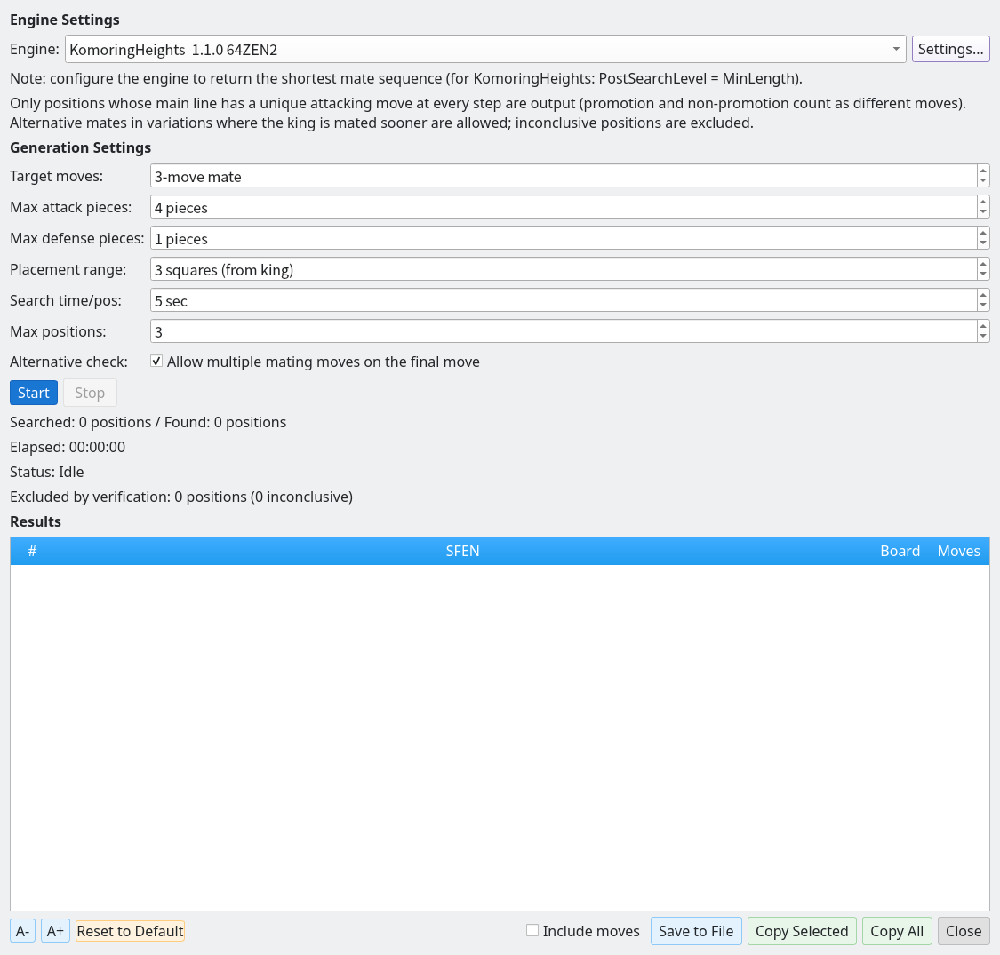
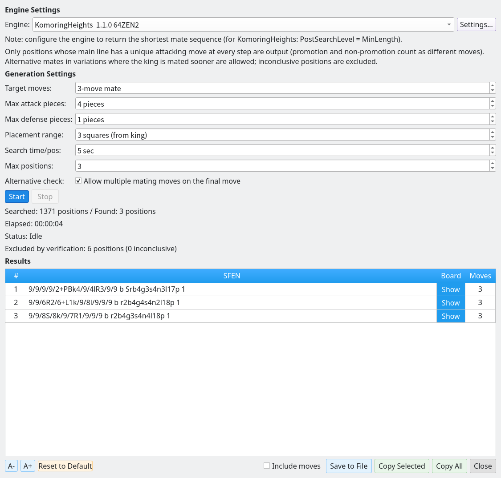
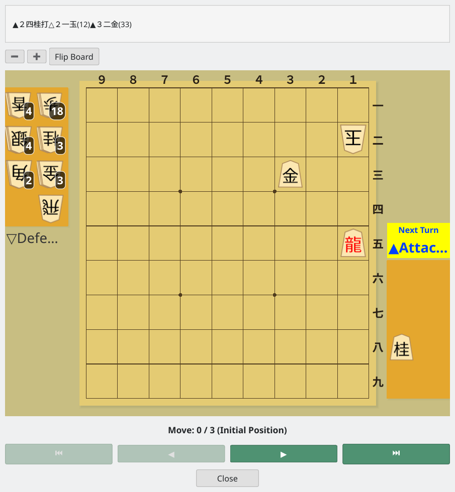

Generate tsume shogi puzzles from random positions verified by a USI engine
Screenshots were captured on Linux with the English interface.
Generate random tsume shogi candidates and verify mates with a USI engine
The tsume shogi generator automatically performs the following steps.
Mate searches can use KomoringHeights, a tsume shogi engine developed and published by komori-n. Download the engine separately, register it in Settings → Engine Settings…, and select it in the generator.
Set the parameters in the generator dialog, then start generation
Choose Game → Tsume Position Generator… to open the dialog. You can configure the following settings.

Generator dialog: set the engine and generation parameters, then click Start
Positions are generated automatically as follows.
Generated positions are first screened by the built-in mate search. Only candidates with mate in exactly the requested number of plies and a single mating first move are sent to the USI engine, and only positions whose mate the engine confirms proceed to the alternative-mate check. The searched count includes positions rejected by the built-in screening.
Discovered tsume shogi positions appear in the results list
When a mate of the requested length is found, unnecessary pieces are trimmed before the position is added to the results. Pieces that can be removed without changing the mating length are automatically eliminated to simplify the puzzle.
The results list offers these actions.

Generation results: three positions with mate in 3 plies (1,371 positions searched in 4 seconds)
Trimming automatically removes decorative pieces from randomly generated positions: pieces that do not affect the mating solution.
Review generated solutions in the principal variation window
Click Board in the results list to open the principal variation window. Replay the mating line one move at a time with the Go Forward 1 Move and Go Back 1 Move buttons.

Principal variation display: a generated 3-ply mate at its starting position (0/3)
Set up generate-tsume, run parallel Python workers, save solutions, and reverify results
generate-tsume uses the same generation pipeline as the GUI. It outputs JSON Lines after checking mate length, main-line uniqueness, and unnecessary pieces. Python can launch the CLI directly as a child process; no MCP server is needed.
The examples below use a Linux shell and Python 3. Run them from the repository root. See Building on Linux for prerequisites. On other platforms, adjust the CLI executable name and path for your environment.
cmake -B build -S . -DCMAKE_BUILD_TYPE=Release
cmake --build build --target shogiboardq-cli --parallel 4
./build/shogiboardq-cli list-enginesFirst register an engine that supports go mate in Settings → Engine Settings. Pass the exact registered name returned by list-engines to --engine, not an executable path. Replace the example name below with your actual name, including spaces.
For KomoringHeights, a starting configuration for parallel generation is Threads=1, USI_Hash=256, PostSearchLevel=MinLength, and GenerateAllLegalMoves=true. Configure these through Engine Settings and check which options your engine supports.
Start with up to ten 3-ply puzzles to check your engine configuration and output. The JSON Lines event log is a different format from the puzzle collection text file.
./build/shogiboardq-cli generate-tsume \
--engine 'KomoringHeights 1.1.0 64ZEN2' \
--target-moves 3 --max-positions 10 \
--timeout-ms 5000 --max-attack 4 --max-defend 1 \
--attack-range 3 --stdin-control > tsume-batch.jsonl| Option | Meaning and range |
|---|---|
--target-moves | Mate length: an odd number from 1 to 19; default 3 |
--max-positions | Limit per process: 1–100 positions; default 10 |
--timeout-ms | Time budget for candidate searches, trimming, and verification: 500–60000 ms; default 5000 |
--max-attack | Maximum attacking pieces on board and in hand combined: 1–10; default 4 |
--max-defend | Maximum defending pieces on the board, excluding the king: 0–10; default 1 |
--attack-range | Attacking-piece placement range around the king: 1–8 squares; default 3 |
--stdin-control | Stop on a line containing stop or on end-of-file on stdin |
--no-final-alternatives | Require a unique final mating move; final-move alternatives are allowed by default |
--no-remaining-to-hand | Do not give unused pieces to the defender; omit this for standard tsume shogi |
started reports settings, progress reports generated, found, rejected, and inconclusive counts, position supplies an accepted puzzle, and finished marks completion. Read the SFEN and solution from position.sfen and position.pv, an array of USI moves. Also check error events and the process exit code.
{"event":"position","sfen":"9/8k/7P1/9/7R1/9/9/9/9 b r2b4g4s4n4l17p 1","pv":["2c2b+","1b1c","2e2c+"]}With --stdin-control, type stop and press Enter to stop. Closing stdin also stops generation. Python must keep stdin=PIPE open until it sends a stop request. An environment that starts the process with closed stdin may cause it to stop immediately.
Save the code below as generate_tsume_parallel.py and run python3 generate_tsume_parallel.py from the repository root. It only uses the Python standard library. Start with TARGET=10 and WORKERS=1, then increase concurrency if CPU and memory capacity allow.
PLIES is the mate length, TARGET is the combined collection target, and WORKERS is the number of concurrent processes. Adjust TIMEOUT_MS, piece limits, and placement range at the top. Targets above 100 use successive batches of at most 100 positions each.
import asyncio
import json
import os
from pathlib import Path
CLI = str(Path("build/shogiboardq-cli").resolve())
ENGINE = "KomoringHeights 1.1.0 64ZEN2" # Use the exact name from list-engines
PLIES = 3
TARGET = 100
WORKERS = 4
TIMEOUT_MS = 5000
MAX_ATTACK = 4
MAX_DEFEND = 1
ATTACK_RANGE = 3
ALLOW_FINAL_ALTERNATIVES = True
OUTPUT = Path(f"tsume-work/tsume_{PLIES}ply_candidates.txt")
ENV = dict(os.environ)
# Optional: use a separately prepared configuration on Linux
# ENV["XDG_CONFIG_HOME"] = "/path/to/tsume-config"
positions = {}
active = set()
def remember(sfen, pv):
fields = sfen.split()
if len(fields) != 4 or len(pv) != PLIES:
raise ValueError("Invalid SFEN or PV length")
key = " ".join(fields[:3]) # Board, turn, and hands; ignore the move number
if key not in positions and len(positions) < TARGET:
positions[key] = sfen + " moves " + " ".join(pv)
def checkpoint():
temporary = OUTPUT.with_suffix(".tmp")
text = "# CLI candidates (before independent collection validation)\n"
text += "\n".join(positions.values()) + "\n"
temporary.write_text(text, encoding="utf-8")
temporary.replace(OUTPUT)
async def stop(process):
if process.returncode is None:
try:
process.stdin.write(b"stop\n")
await process.stdin.drain()
except (BrokenPipeError, ConnectionResetError):
pass
async def close_process(process):
await stop(process)
try:
await asyncio.wait_for(process.wait(), timeout=15)
except asyncio.TimeoutError:
process.kill()
await process.wait()
active.discard(process)
async def worker(number):
while len(positions) < TARGET:
args = [
CLI, "generate-tsume", "--engine", ENGINE,
"--target-moves", str(PLIES),
"--max-positions", str(min(100, TARGET - len(positions))),
"--timeout-ms", str(TIMEOUT_MS),
"--max-attack", str(MAX_ATTACK), "--max-defend", str(MAX_DEFEND),
"--attack-range", str(ATTACK_RANGE), "--stdin-control",
]
if not ALLOW_FINAL_ALTERNATIVES:
args.append("--no-final-alternatives")
log_path = OUTPUT.parent / f"worker-{PLIES}ply-{number}.jsonl"
err_path = OUTPUT.parent / f"worker-{PLIES}ply-{number}.stderr.log"
with log_path.open("a", encoding="utf-8") as log, err_path.open("ab") as err:
process = await asyncio.create_subprocess_exec(
*args, env=ENV,
stdin=asyncio.subprocess.PIPE,
stdout=asyncio.subprocess.PIPE, stderr=err,
)
active.add(process)
try:
# Another worker may have reached the target during startup.
if len(positions) >= TARGET:
await stop(process)
async for raw in process.stdout:
line = raw.decode("utf-8")
log.write(line)
log.flush()
event = json.loads(line)
if event["event"] == "error":
raise RuntimeError(event["message"])
if event["event"] != "position":
continue
remember(event["sfen"], event["pv"])
checkpoint()
print(f"{len(positions)}/{TARGET}", flush=True)
if len(positions) == TARGET:
await asyncio.gather(*(stop(p) for p in list(active)))
if await process.wait() != 0:
raise RuntimeError(f"CLI failed; see {err_path}")
finally:
await close_process(process)
async def main():
if TARGET < 1 or WORKERS < 1:
raise ValueError("TARGET and WORKERS must be positive")
OUTPUT.parent.mkdir(parents=True, exist_ok=True)
if OUTPUT.exists():
for line in OUTPUT.read_text(encoding="utf-8").splitlines():
if line and not line.startswith("#"):
sfen, moves = line.split(" moves ", 1)
remember(sfen, moves.split())
tasks = [asyncio.create_task(worker(i)) for i in range(WORKERS)]
try:
await asyncio.gather(*tasks)
finally:
for task in tasks:
task.cancel()
await asyncio.gather(*tasks, return_exceptions=True)
await asyncio.gather(*(close_process(p) for p in list(active)))
checkpoint()
print(f"Collected: {OUTPUT} (validate the collection separately)")
if __name__ == "__main__":
asyncio.run(main())All workers share a dictionary keyed by the SFEN board, turn, and hands. Results are saved through temporary-file replacement after each discovery and reloaded on restart. JSON Lines and stderr logs are kept separately for each mate length and worker. Once the target is reached, all CLI processes receive a stop request. After Ctrl+C, restart to resume from saved results.
This code collects positions and removes duplicate SFENs. It does not exclude similar puzzles with the same solution but different piece types, or mirrored positions. Independent validation of the whole collection is a separate step.
--timeout-ms is not a deadline for the entire command. Long mates or strict settings may yield few positions, so time to reach the target is not guaranteed. Start with a small target, inspect progress, and stop to adjust settings if needed. Inconclusive results are neither proof of no mate nor successful verification.XDG_CONFIG_HOME, prepare engine registrations and options in ShogiBoardQ/ShogiBoardQ.ini under that directory. Use the same environment for list-engines and Python.OUTPUT. The example does not reverify existing lines. If mate length, engine, or alternative-mate policy changes, use a new output file or reverify existing entries. Settings are also recorded in the started event logs.ALLOW_FINAL_ALTERNATIVES=False and also pass --no-final-alternatives when reverifying.tsume-batch.jsonl is an event log. Python writes collected SFENs and solutions to tsume-work/tsume_3ply_candidates.txt. If a CLI process fails, inspect its JSON Lines and stderr logs.Use UTF-8 and one puzzle per line in the form SFEN moves USI-moves…. Comments beginning with # can record the date, engine, mate length, piece limits, time budgets, and alternative-mate policy.
9/8k/7P1/9/7R1/9/9/9/9 b r2b4g4s4n4l17p 1 moves 2c2b+ 1b1c 2e2c+Use verify-tsume to recheck main-line uniqueness. This example checks one position; for a collection, pass each SFEN in turn.
./build/shogiboardq-cli verify-tsume \
--engine 'KomoringHeights 1.1.0 64ZEN2' \
--target-moves 3 --timeout-ms 15000 \
--sfen '9/8k/7P1/9/7R1/9/9/9/9 b r2b4g4s4n4l17p 1'The JSON field ok reports command success. Also require status to be unique before accepting the result, and defer or retry unknown results. This command checks main-line uniqueness; it does not replace auditing every saved PV move and the necessity of each piece.
For independent collection validation, the tools included in the source check shortest mate length, legal solutions, main-line uniqueness, and every single-piece removal. Their --engine argument takes an engine executable path, unlike the CLI registered name.
cmake -B build -S . -DBUILD_TESTING=ON
cmake --build build --target tsumeshogi_collection_auditor --parallel 4
python3 scripts/audit_tsume_collections.py tsume-work/tsume_3ply_candidates.txt \
--engine /path/to/KomoringHeights-by-gcc \
--output-dir tsume-work/audit-3ply --workers 4 --timeout-ms 30000Inspect statuses, unique_minimal, and changed in summary.json. Do not count unknown entries as complete; retry with a larger budget or exclude them. Verified results are saved in tsume_3ply_minimal.txt. If trimming or duplicate/similarity filtering reduces the count, replenish and audit again. See the collection README (Japanese) for detailed validation conditions.
The piece audit establishes that no single-piece removal preserves the acceptance conditions. It does not guarantee the minimum piece count under simultaneous removals or changes of piece type.
Check solution similarity and puzzle order as well as position validity
Different SFENs can still produce similar solving experiences through the same king chase, reflection, translation, or substitutions such as gold and promoted knight. Removing duplicate positions with the standard CLI and Python example does not guarantee variety in a collection.
scripts/refill_diverse_tsume.py takes verified collections, shares a similarity index across workers, and generates replacements for missing entries. It uses dedicated samplers and auditors separately from the standard CLI. After replenishment, run an independent audit with scripts/audit_tsume_collections.py. Once all results are conclusive, scripts/publish_diverse_tsume.py orders puzzles to reduce overlap with the preceding ten solutions.
Similarity filtering is an editorial rule based on the main line, not a complete assessment of a puzzle’s value including variations and misleading alternatives. See the collection README (Japanese) for input requirements, resuming, exclusions, and publication.